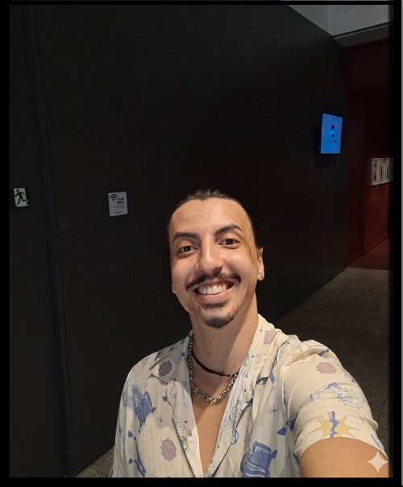

˚⸙ Sobre Mim ⸙⭒

Minha jornada...
Muito prazer , me chamo Hyago! Sou tatuador há 5 anos,mas minha
história com a arte começou na adolescência,quando eu já era o
desenhista da turma,criando caricaturas e artes nos cadernos dos
meus colegas.
Hoje,me considero um artista versátil.Não me limito a apenas um
estilo,embora tenha forte preferência pelo: Blackwork,Old School e
Anime/Geek.
Para mim,tatuar vai muito além do trabalho.Não é apenas um cliente
ou mais uma arte na pele; é a realização de um sonho que se torna
real a cada conexão que crio com as pessoas que confiam no meu
traço.